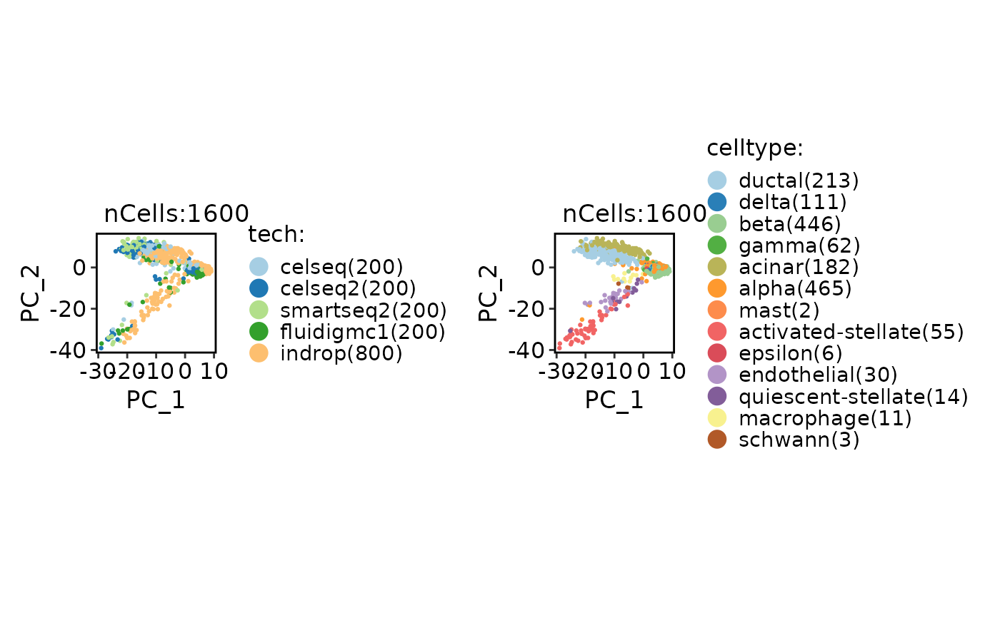
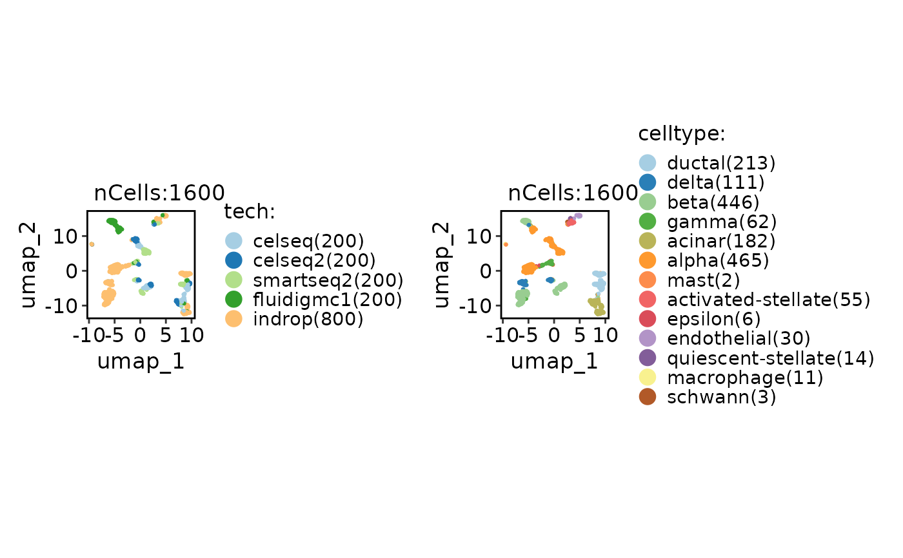

This is a modified version of harmony::RunHarmony specifically designed for compatibility with RunSymphonyMap.
Usage
RunHarmony2(object, ...)
# S3 method for class 'Seurat'
RunHarmony2(
object,
group.by.vars,
assay = NULL,
reduction = "pca",
dims.use = 1:30,
project.dim = TRUE,
reduction.name = "Harmony",
reduction.key = "Harmony_",
verbose = TRUE,
seed.use = 11,
...
)Arguments
- object
A Seurat object.
- ...
Additional arguments to be passed to harmony::RunHarmony.
- group.by.vars
The batch variable name.
- assay
Which assay to use. If
NULL, the default assay of the Seurat object will be used.- reduction
Which dimensionality reduction to use. Default is
"pca".- dims.use
The dimensions to be used. Default is
1:30.- project.dim
Whether to project dimension reduction loadings. Default is
TRUE.- reduction.name
The name of the reduction to be stored in the Seurat object. Default is
"Harmony".- reduction.key
The prefix for the column names of the Harmony embeddings. Default is
"Harmony_".- verbose
Whether to print the message. Default is
TRUE.- seed.use
Random seed for reproducibility. Default is
11.
Examples
data(panc8_sub)
panc8_sub <- standard_scop(panc8_sub)
#> ℹ [2026-01-30 17:17:25] Start standard scop workflow...
#> ℹ [2026-01-30 17:17:25] Checking a list of <Seurat>...
#> ! [2026-01-30 17:17:25] Data 1/1 of the `srt_list` is "unknown"
#> ℹ [2026-01-30 17:17:25] Perform `NormalizeData()` with `normalization.method = 'LogNormalize'` on the data 1/1 of the `srt_list`...
#> ℹ [2026-01-30 17:17:28] Perform `Seurat::FindVariableFeatures()` on the data 1/1 of the `srt_list`...
#> ℹ [2026-01-30 17:17:29] Use the separate HVF from srt_list
#> ℹ [2026-01-30 17:17:29] Number of available HVF: 2000
#> ℹ [2026-01-30 17:17:29] Finished check
#> ℹ [2026-01-30 17:17:29] Perform `Seurat::ScaleData()`
#> ℹ [2026-01-30 17:17:30] Perform pca linear dimension reduction
#> ℹ [2026-01-30 17:17:31] Perform `Seurat::FindClusters()` with `cluster_algorithm = 'louvain'` and `cluster_resolution = 0.6`
#> ℹ [2026-01-30 17:17:31] Reorder clusters...
#> ℹ [2026-01-30 17:17:31] Perform umap nonlinear dimension reduction
#> ℹ [2026-01-30 17:17:31] Non-linear dimensionality reduction (umap) using (Standardpca) dims (1-50) as input
#> ℹ [2026-01-30 17:17:37] Non-linear dimensionality reduction (umap) using (Standardpca) dims (1-50) as input
#> ✔ [2026-01-30 17:17:42] Run scop standard workflow completed
panc8_sub <- RunHarmony2(
panc8_sub,
group.by.vars = "tech",
reduction = "pca"
)
#> Transposing data matrix
#> Initializing state using k-means centroids initialization
#> Harmony 1/10
#> Harmony 2/10
#> Harmony 3/10
#> Harmony 4/10
#> Harmony 5/10
#> Harmony 6/10
#> Harmony 7/10
#> Harmony converged after 7 iterations
CellDimPlot(
panc8_sub,
group.by = c("tech", "celltype"),
reduction = "pca"
)

CellDimPlot(
panc8_sub,
group.by = c("tech", "celltype"),
reduction = "Harmony"
)

panc8_sub <- standard_scop(
panc8_sub,
prefix = "Harmony",
linear_reduction = "Harmony"
)
#> ℹ [2026-01-30 17:17:53] Start standard scop workflow...
#> ℹ [2026-01-30 17:17:53] Checking a list of <Seurat>...
#> ℹ [2026-01-30 17:17:54] Data 1/1 of the `srt_list` has been log-normalized
#> ℹ [2026-01-30 17:17:54] Perform `Seurat::FindVariableFeatures()` on the data 1/1 of the `srt_list`...
#> ℹ [2026-01-30 17:17:55] Use the separate HVF from srt_list
#> ℹ [2026-01-30 17:17:55] Number of available HVF: 2000
#> ℹ [2026-01-30 17:17:55] Finished check
#> ℹ [2026-01-30 17:17:55] Perform `Seurat::ScaleData()`
#> ℹ [2026-01-30 17:17:55] Perform Harmony linear dimension reduction
#> ℹ [2026-01-30 17:17:55] `linear_reduction` Harmony is already existed. Skip calculation
#> ℹ [2026-01-30 17:17:56] Perform `Seurat::FindClusters()` with `cluster_algorithm = 'louvain'` and `cluster_resolution = 0.6`
#> ℹ [2026-01-30 17:17:56] Reorder clusters...
#> ℹ [2026-01-30 17:17:56] Perform umap nonlinear dimension reduction
#> ℹ [2026-01-30 17:17:56] Non-linear dimensionality reduction (umap) using (HarmonyHarmony) dims (1-30) as input
#> ℹ [2026-01-30 17:18:02] Non-linear dimensionality reduction (umap) using (HarmonyHarmony) dims (1-30) as input
#> ✔ [2026-01-30 17:18:08] Run scop standard workflow completed
CellDimPlot(
panc8_sub,
group.by = c("tech", "celltype"),
reduction = "StandardpcaUMAP2D"
)
 CellDimPlot(
panc8_sub,
group.by = c("tech", "celltype"),
reduction = "HarmonyUMAP2D"
)
CellDimPlot(
panc8_sub,
group.by = c("tech", "celltype"),
reduction = "HarmonyUMAP2D"
)